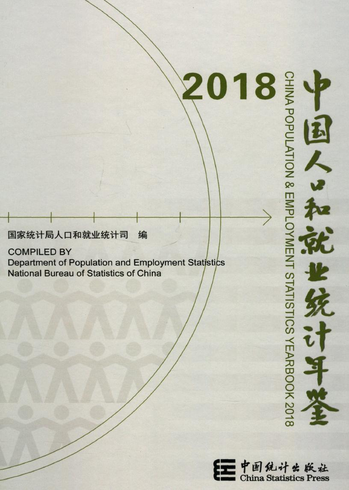

条目检索
2020年
2019年
2018年
2017年
2016年
2015年
2014年
2013年
2012年
2011年
2010年
2009年
2008年
2007年
2006年
2005年
2004年
2003年
2002年
2001年
2000年
1999年
1998年
1997年
1996年
1995年
1994年
1993年
1992年
1991年
1990年
1989年
1988年
| 条目题名 | 页码 | 下载 |
| 《中国人口和就业统计年鉴—2018》编委会和编辑工作人员 | 4-5 | |
| 编辑说明 | 6-8 | |
| 第一部分 综合数据 | 1-57 | |
| 1-1 分地区年末人口数 | 2-5 |

|
| 1-2 按性别分人口数 | 6 |
|
| 1-3 人口年龄结构和抚养比 | 7 |
|
| 1-4 按城乡分人口数 | 8 |
|
| 1-5 分地区年末城镇人口比重 | 9-10 |
|
| 1-6 人口出生率、死亡率和自然增长率 | 11 |
|
| 1-7 各地区人口出生率、死亡率和自然增长率 | 12-19 |
|
| 1-8 流动人口数 | 20 |
|
| 1-9 平均预期寿命 | 20 |
|
| 1-10 各地区人口平均预期寿命 | 21 |
|
| 1-11 六次全国人口普查人口基本情况 | 22 |
|
| 1-12 全国历年人口密度 | 23 |
|
| 1-13 就业基本情况 | 24 |
|
| 1-14 分城乡就业人员年末人数 | 25 |
|
| 1-15 分产业就业人员年末人数 | 26 |
|
| 1-16 城镇登记失业人数及失业率(年末数) | 27 |
|
| 1-17 分地区城镇登记失业人员数(年末数) | 28-29 |
|